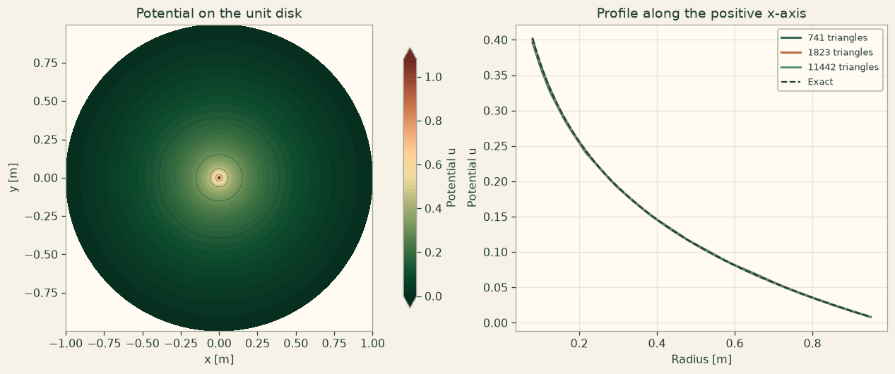
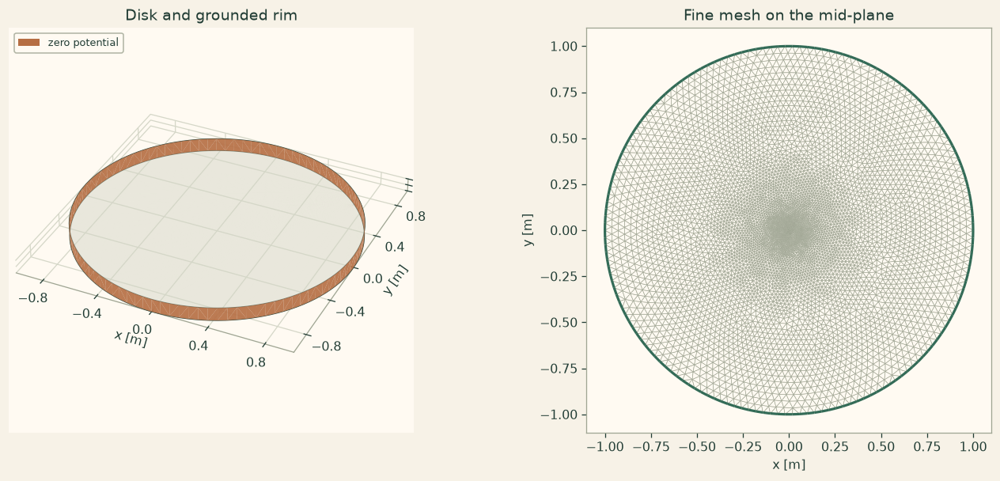

Docs › Examples › A point source in a disk
Poisson equation · 2D
A point source in a disk
A unit source at the center of a disk produces a logarithmic potential. Follow it along a radius and see how refining the mesh improves the profile.
Run locally with OneSimulation. The example downloads are free. Running them requires an activated runtime. Runtime Alpha 0.2.1a8 · CPython 3.13 on macOS (Apple Silicon), Ubuntu 22.04 (x86-64), and Windows x64. Installation and activation · View pilot plans. Scope of the reference checks.


What it computes
OneSimulation meshes the unit disk with smaller triangles near the origin. Barycentric weights place the point load on its containing triangle, and the sparse solver finds the potential with a zero value on the rim. The script that builds the STEP file comes with the notebook.
What it checks
The load sums to one on all three meshes. On 576 probes between radii 0.08 and 0.95, the maximum absolute error against −ln(r)/(2π) falls from 0.01204 to 0.00294 and 0.00035 as the node count increases from 419 to 960 and 5,801.
Geometry
Save the STEP file point_source_unit_disk.step next to the notebook before running it.


The geometry script
The script point_source_unit_disk_geometry.py builds the geometry with the CAD objects of OneSimulation and writes the file. Change a dimension there, run it, and run the notebook again.
"""Build the disk carrier and name its lateral wall for the zero-potential rim."""
from onesim.cad.d3 import Cylinder
disk = Cylinder(radius=1.0, length=0.1)
disk.grouped(rim=disk.boundaries.outer_wall).save("point_source_unit_disk.step")The notebook
The complete notebook, cell by cell. Run it to produce the figures and the comparison printout.
A unit point source drives the two-dimensional Poisson equation \(-\nabla^2u=\delta_0\) on a disk of radius one. The rim is held at zero. Every circle around the origin carries a unit outward flux, giving the exact potential \(u(r)=-\log(r)/(2\pi)\) for \(0<r\leq1\) (Evans, Partial Differential Equations, Chapter 2). The value at the origin diverges. We compare profiles at finite distances.
import numpy as np
from onesim.cad.exchange import load
from onesim.meshing import TriangularMesher
from onesim.numerics.fem import FiniteElement, Lagrange, PlanarDirichletFiniteElement
from onesim.numerics.linear import SparseDirect
from onesim.visualization import plots, theme
theme.set()Geometry and mesh
Cut the disk halfway through the STEP cylinder. The three meshes use progressively smaller triangles toward the point source, where the potential changes fastest.
part = load("point_source_unit_disk.step")
disk = part.section((0, 0, 1), origin=(0, 0, part.size[2] / 2))
meshes = [TriangularMesher(
target_size=h, size_field=lambda p, h=h: h * (0.1 + 0.9 * np.linalg.norm(p[:, :2], axis=1)),
).generate(disk) for h in (0.22, 0.11, 0.04)]
fig = plots.figure(1, 2, size=(11, 4.5))
plots.geometry(part, selection={"zero potential": part.boundaries.rim}, labels=False,
camera=plots.Camera(elevation=35, azimuth=-65), title="Disk and grounded rim", ax=fig[0])
plots.mesh(meshes[-1], groups=("all",), legend=False, title="Fine mesh on the mid-plane", ax=fig[1])
plots.show()Apply the point load
The load on each linear basis function \(N_i\) is exactly \(N_i(0)\). OneSim locates the origin, evaluates the three basis functions of its triangle and assembles the stiffness matrix with a zero value on the rim. The three weights must add to one. The same finite-element basis samples the computed potential along twelve rays.
element = FiniteElement(element=Lagrange(order=1))
form = PlanarDirichletFiniteElement(finite_element=element, boundary=disk.boundaries.rim)
radii = np.geomspace(0.08, 0.95, 48)
angles = np.arange(12) * (2 * np.pi / 12)
probes = (np.column_stack((np.cos(angles), np.sin(angles)))[:, None, :] * radii[None, :, None]).reshape(-1, 2)
exact = -np.log(radii) / (2 * np.pi)
profiles = []
for mesh in meshes:
space, op = element.bind_space(mesh), form.bind(mesh)
cell, local = space.locate([[0.0, 0.0]])
load = np.zeros(space.dof_count)
load[space.cell_dofs[cell[0]]] = space.basis(local)[0]
solution = SparseDirect().bind().solve(op.stiffness, load[op.interior])
potential = op.embed(solution.solution)
rays = space.evaluate(potential, probes).reshape(len(angles), len(radii))
profiles.append(rays[0])
error = np.max(np.abs(rays - exact))
print(f"{len(mesh.coordinates):5d} nodes, {mesh.cell_count:5d} triangles total load {load.sum():.8f} max absolute error {error:.5f}")Read the potential
The field map includes the finite peak on the fine mesh. The radial profile compares all three meshes with the logarithm over the annulus used for the error check, \(0.08\le r\le0.95\).
fig = plots.figure(1, 2, size=(11, 4.5))
plots.heatmap(*space.dof_coordinates.T, potential, triangles=space.cell_dofs, contours=8,
label="Potential u", title="Potential on the unit disk", ax=fig[0])
plots.line(radii, {f"{mesh.cell_count} triangles": profile for mesh, profile in zip(meshes, profiles)}, reference={"Exact": exact},
xlabel="Radius [m]", ylabel="Potential u", title="Profile along the positive x-axis", ax=fig[1])
plots.show()